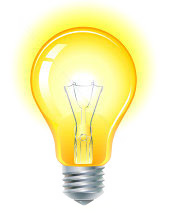

Fontes Renováveis de Energia
Para distinguirmos se uma fonte de energia é renovável ou não devemos pensar no recurso que gera essa energia. Este recurso é finito? ele pode ser reproduzível? Quanto tempo a natureza demora para repor este recurso? Todas essas perguntas são relevantes se quisermos nos aprofundar no tema. Por agora podemos pensar que uma fonte de energia renovável é toda energia na qual o recurso gerador não se esgota ao longo do tempo. É o caso da energia solar, eólica, geotermica, hidraulica, entre outras. Quando falamos ao longo do tempo, queremos dizer o tempo do homem (tempo histórico), e não o tempo da terra (geológico).